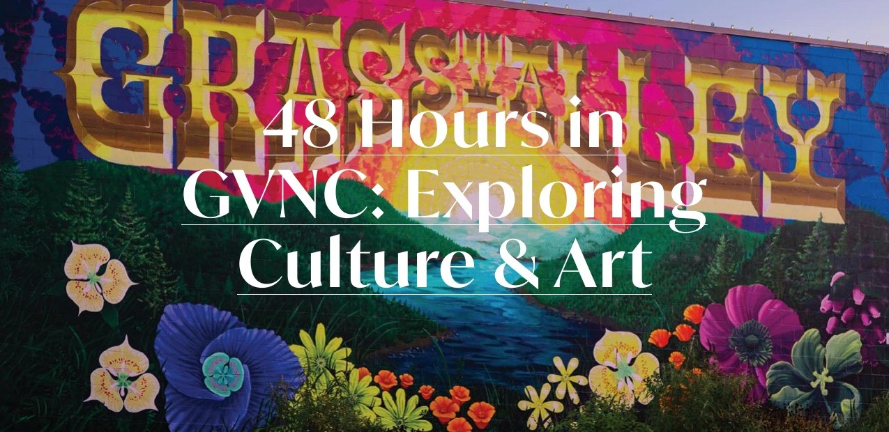
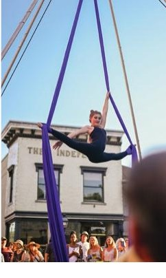
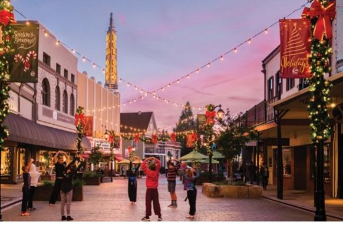
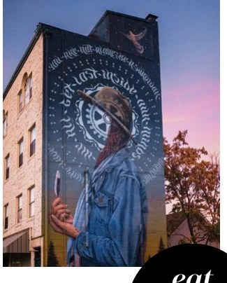
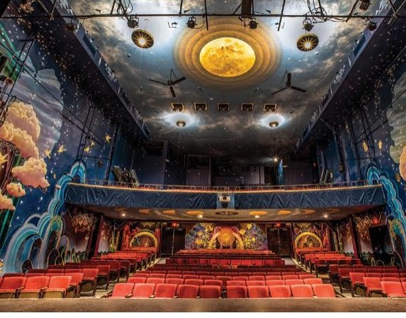
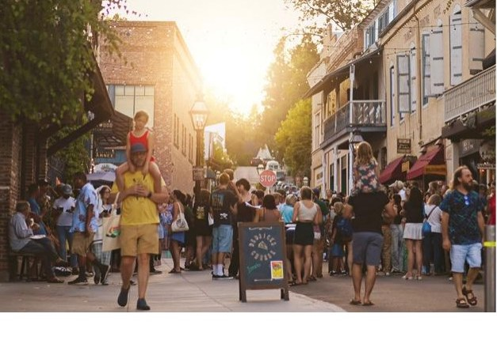

In 2017, when the California Arts Council announced the 14 districts that would serve as California’s inaugural state-designated Cultural Districts, only four were from rural communities, and two of them just so happened to be in Nevada County — Truckee and the combined small towns of Grass Valley and Nevada City.
The District
It was a moment that signified something both locals and frequent visitors already knew about the infamous gold rush towns—the Grass Valley Nevada City (GVNC) Cultural District has a long history of being at the epicenter of arts (all forms visual, literary, media, healing, etc.), culture, and technology in California.
From one of the greatest American poets, Gary Snyder, to progressive journalist Jennie Carter; filmmakers Jonathan Dayton (Little Miss Sunshine) and Adrian Molina (Coco) to professional skateboarders John Cardiel and Chris Senn, snowboarders Tina Basich Haller; and let’s not forget the bevy of musicians (Utah Phillips, Roger Hodgson, Joanna Newsom, Jonathan Richman, and Hunter Burgan), dancers (Lola Montez, Alison Clancy), and artists (Charles Woods and David Osborn, Rose Freymuth-Frazier, and Tahiti Pehrson) are just a few who have called this place home.
Maybe it’s the vibes we feel unconsciously from the granite and gold quartz reverberating all around, or the sounds of the whispering pines, or the sheer number of people making art professionally and for fun—but art doesn’t just grow here, it thrives and flourishes.


Grass Valley
From the moment you step out onto Mill Street in the heart of Grass Valley you are surrounded by charming shops, an array of dining options, and public art on every corner.
The iconic spire of the Del Oro Theatre can be seen at various downtown vantage points while stunning large-scale murals tell unique local stories. They include the open “Mine Shaft” at 165 Mill Street by John Pugh, the iconic Grass Valley sign at 101 Mill Street by Justin Lovato, “A New Dawn” at 105 S Church Street painted by Miles Toland, Ursula X Young’s one-of-a-kind take on the famous dancer Lola Montez can be seen at 121 Neal Street, and the Nisenan mural “Solim Ni—I sing” painted by Nikila Badua at 305 Neal Street.
Eat · Play · Stay
Check out local art and artisans at Artworks Gallery or Make Local Habit. Pick up that impossible to find LP from Clocktower Records or Ron’s Real Records, your next favorite page turning novel at The Bookseller or something more obscure at Booktown Books, cables for your guitar amp or a new guitar at Foggy Mountain Music, or specialty yarn at Heathered Yarn Co.
Sip local and regional wines at Cork 49, New West Wines, or Sierra Star Winery or a beer at Grass Valley Brewery. Maybe it’s something sweet you are craving. Satisfy your sweet tooth with a French pastry from Cake, hand dipped Lazy Dog Ice Cream or something delicious AND gluten free from Corvus Bakery.
Pick up lunch or a picnic from Backporch Market, Tess’ Kitchen or El Barrio Market before heading over to Empire Mine State Historic Park. Just over one mile away from downtown Grass Valley, Empire Mine is the site of one of the oldest, deepest, and richest gold mines in California. Here you can tour the lush grounds or take a more vigorous hike along its many trails.
Finish up the evening with a hand-crafted, custom-blended cocktail at the Iron Door Saloon at the beautifully renovated historic Holbrooke Hotel. Or enjoy some live music, comedy, dance or theater at the Center for the Arts.

On the weekends the streets come alive with visitors heading downtown for dinner, a movie or to take in some live music or theater. 48 Hours in GVNC · MUSE Issue 01 / 2024


Nevada City
Just four miles away is Nevada City, originally named Nevada (Spanish for “snow-covered”) after a particularly snowy winter in 1850. The word “City” was added in 1864 to relieve confusion with the nearby state of Nevada.
Historic Victorian homes and their heritage gardens line the winding streets here. The town’s main corridor, Broad Street, looks like something from a movie set, perfectly preserved and a reminder of bygone eras. Stop by the Nevada City Chamber of Commerce and pick up a walking tour or a tree map to fully acquaint yourself.
The historic Nevada Theatre—the oldest continuously operated theater venue on the West Coast—is home to several theater companies including Community Asian Theater of the Sierra (CATS), Sierra Stages, LeGacy Presents, and The Lyric Rose Theatre Company. On Sundays The Onyx Downtown screens classic, repertory and independent films. The theatre recently underwent an extensive interior renovation which includes a stunning, must-see, large-scale, completely original mural spanning the entire auditorium painted by artist Sarah Coleman.
Across the street from KVMR is a hub of arts and culture in Nevada City—the Miners Foundry Cultural Center. Once a foundry that repaired heavy machinery for the mines, the space was reimagined in the late 1960s and 70s as the American Victorian Museum by two San Francisco artists, Charles Woods and David Osborn. The Miners Foundry has since hosted everything from the annual Robert Burns Scottish Celebration to a secret concert by the Red Hot Chili Peppers.
This article mentions 19 places you can visit on the Nevada County Cultural Map — open it with all of them marked.
See the 19 places on the map →Words Jesse Locks · Photos Gold Country Photography & Akim Aginsky (Nevada Theater) · MUSE Issue 01 / 2024, pages 28–31